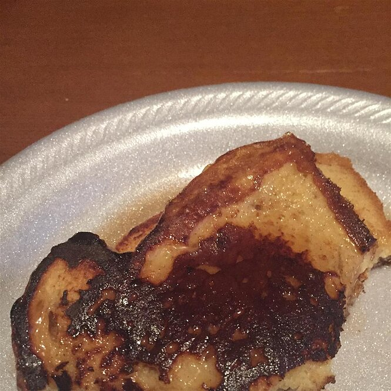

Cinnamon-Accented French Toast

Very quick, easy, and tasty french toast recipes by grumpybutt
Add a bit of cinnamon, sugar and butter to a piece of toast, and it becomes a mouthwatering treat. A delicious piece of cinnamon toast can be a healthy addition to a balanced breakfast... read more
- Prep: 5 mins
- Cook: 5 mins
- Serving: 6
Nutrition fact
Per Serving109 calories; protein 5.1g; carbohydrate 14.5g; fat 3.3g; cholesterol 93mg; sodium 302.2mgFull Nutrition
Ingredients
- 3 eggs, beaten
- 2 teaspoons white sugar
- 1 teaspoon milk
- 1 teaspoon ground cinnamon
- 1/4 teaspoon salt
- 6 slices bread
Directions
-
Mix beaten eggs, sugar, milk, cinnamon, and salt in a large, shallow bowl. Dip bread slices into egg mixture to coat.
-
Heat a skillet over medium heat. Cook bread in hot skillet until browned completely, 2 to 3 minutes per side.